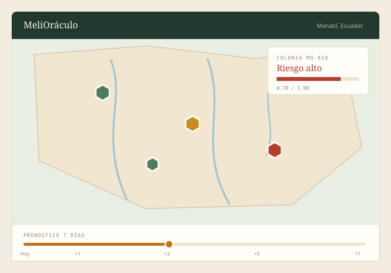
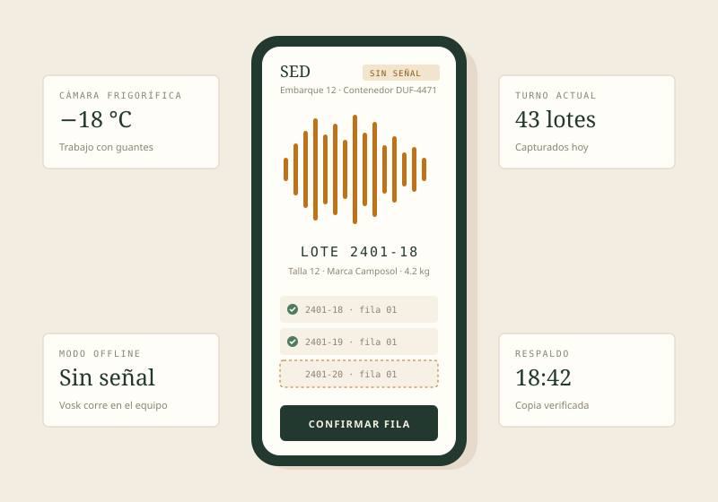
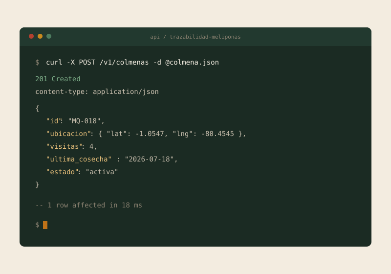

01
HTML5
Estructura semántica, formularios y etiquetas accesibles.
Intermedio
Portafolio personal · Guayaquil, Ecuador
Estudiante de Ingeniería en Sistemas Inteligentes
Estudio en la Universidad ECOTEC y me interesan el desarrollo web, las APIs y el análisis de datos aplicado a problemas concretos. Casi todo lo que he construido gira alrededor de las abejas nativas sin aguijón: aplicaciones que registran colmenas, calculan riesgo con datos abiertos del Ecuador y siguen funcionando donde no hay señal.
01
Me llamo Carlos Julio Villegas Bravo y estudio Ingeniería en Sistemas Inteligentes en la Universidad ECOTEC. Entré a la carrera sin tener claro qué esperar y me quedé por los proyectos: las tareas donde hay que resolver algo concreto y no solo aprobar el laboratorio.
Fuera de clases me interesa la meliponicultura, la cría de abejas nativas sin aguijón. De ahí salieron casi todos mis proyectos personales: una aplicación que estima el riesgo de una colmena con datos del SNGR y del INAMHI, una API para registrar visitas y cosechas, y un sistema de captura por voz para una cámara frigorífica donde no hay señal. Además me encanta la tecnología: armar cosas, probar herramientas nuevas y entender cómo funcionan por dentro.
En lo académico quiero cerrar la carrera con un portafolio que se sostenga solo y conseguir prácticas en desarrollo de software, sobre todo en backend o en manejo de datos. A mediano plazo me gustaría trabajar en servicios web que funcionen en lugares donde la conexión no es confiable, que es el problema que más he visto en el campo.
02
Herramientas que uso en clases y en proyectos propios. El nivel indicado es el que puedo sostener sin ayuda; el resto lo voy aprendiendo sobre la marcha.
01
Estructura semántica, formularios y etiquetas accesibles.
Intermedio
02
Variables, flexbox, grid y diseño adaptable a móviles.
Intermedio
03
Commits, ramas y trabajo con repositorios remotos.
Intermedio
04
Scripts de extracción de datos, pandas y consumo de APIs.
Intermedio
05
Modelado de tablas, consultas y nociones de PostGIS.
En formación
06
Aplicaciones móviles que funcionan sin conexión.
En formación
03
Tres trabajos que salieron de la carrera y de la meliponicultura. Los dos primeros nacieron como proyectos personales y el último como herramienta de apoyo para los dos anteriores.

Aplicación móvil y backend
Prototipo para estimar la vulnerabilidad de colmenas de meliponas en la provincia de Manabí. Cruza cinco factores ponderados —inundación, deslizamiento, sequía, cercanía a ríos y áreas inundables— con datos abiertos del SNGR, el MAAE, el IGM y el INAMHI, y calcula el pronóstico estacional en un backend con FastAPI y PostGIS. Ganó la convocatoria Anticípate e Innova (Categoría 1).

Aplicación móvil
Captura de lotes por voz para el embarque de contenedores a −18 °C. El operario dicta el número de lote y el reconocimiento corre sin internet con Vosk sobre un Zebra TC26, así que funciona dentro de la cámara frigorífica, con guantes y sin señal. La información se guarda en SQLite con migraciones versionadas, auditoría y respaldo automático cuando el archivo se corrompe.

API REST
API en TypeScript para registrar colmenas, visitas y cosechas, con PostgreSQL como base de datos. Los prototipos de monitoreo envían lo que capturan cuando recuperan conexión, de modo que el historial de cada colmena queda completo aunque el trabajo de campo haya sido sin señal. Se levanta con Docker para probarla en local.
04
Si tienes un proyecto, una oferta de prácticas o una duda sobre alguno de los trabajos, escríbeme. Reviso el correo todos los días.